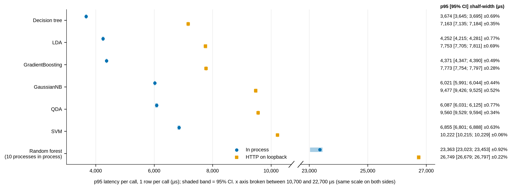
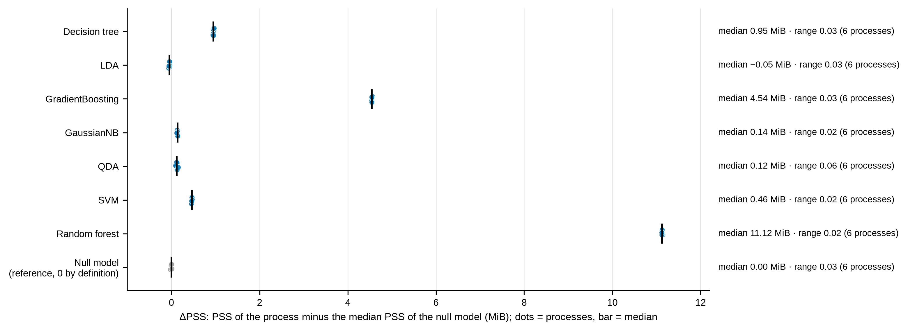

Rodada final sem estresse: latência e memória de 7 modelos
Esta rodada mede quanto cada modelo custa no rasp (o Raspberry Pi 4), em tempo e em memória, com o método validado na etapa de 15/11. São estes os números que alimentam o Pareto final (ticket 21), que vai cruzar o custo com a qualidade (MCC) de cada modelo; a qualidade não entra nesta página. Até o Pareto, os resultados continuam exploratórios.
As figuras têm texto em inglês e ficam em figuras/ na raiz do site; as tabelas e o texto estão em português. Os termos técnicos (p95, IC, PSS, ΔPSS, HTTP, MiB, µs) estão explicados em Como ler estes números, mais abaixo.
Condições comuns
- Modelos: os 7 com o seletor de atributos LowVariance: árvore de decisão, LDA (análise discriminante linear), GradientBoosting, GaussianNB (Naive Bayes gaussiano), QDA (análise discriminante quadrática), SVM (máquina de vetores de suporte) e Random Forest. Os 4 com o seletor MutualInformation ficaram fora, porque ainda não têm MCC no teste.
- Três medições, todas no regime isolado (sem estresse, sem MQTT, sem rede real):
- Latência em processo: o tempo de cada
predictde 1 linha dentro do programa, sem servidor, no núcleo 2, sem o medidor de memória ao lado (a validação mostrou que ele sobe o p95 em cerca de 1,2% e o p99 em centenas de microssegundos). - Latência via HTTP em loopback: HTTP é o protocolo de pedidos e respostas da web. Um cliente no próprio rasp (núcleo 3) manda
POST /predictbinário de 1 linha ao serviço de inferência (núcleo 2), um pedido por vez numa conexão persistente, com um servidor novo a cada processo. As predições recebidas são conferidas contra as do treino. - Memória: PSS, USS e o pico do contador do kernel (
memory.peak, zerado depois do aquecimento) de cada modelo e do modelo nulo.
- Latência em processo: o tempo de cada
- Cada medição é um processo novo, num escopo do systemd, preso a um núcleo, com 1 thread. Ordem sorteada (semente 42). Condição de referência: desktop desligado, governor
performance, interrupções de rede no núcleo 0. - Latência: 200 chamadas de aquecimento e 10.000 medidas por processo, 6 processos por modelo (a Random Forest em processo tem 10, veja abaixo). O intervalo de confiança (IC) do p95 vem de um bootstrap em dois níveis com blocos de 29 chamadas, unido ao IC-t dos p95 por processo.
- Memória: 200 de aquecimento e 2.000 chamadas por processo, 6 processos por modelo e 6 do modelo nulo.
- Quando: de 15/11/2026 às 23:04 a 16/11/2026 às 01:42, mais uma coleta extra da Random Forest em 16/11. 136 células válidas, nenhuma descartada, registro
throttledsempre0x0(nenhuma redução de frequência). Ao fim de cada processo de latência, a placa estava entre 61,8 e 73,5 °C; a leitura mais baixa no início de um processo foi 55,5 °C, num processo da coleta extra. - Critério fixado antes de medir: a meia-largura do IC de 95% do p95 tem de ser no máximo 1,0% do p95. É o único limite desta página: não há limite de latência no projeto.
Resumo
Meias-larguras de 0,06% a 0,92%, nos dois jeitos de medir.
Quase o mesmo para os 7 modelos: é o trabalho do serviço, não do modelo.
A maior diferença de ΔPSS entre processos do mesmo modelo.
throttled sempre 0x0.
Resultados por modelo
Uma linha por modelo, do mais rápido ao mais lento pelo p95 em processo. Latência em microssegundos (µs; 1.000 µs = 1 ms): o p95, o IC de 95% entre colchetes e a meia-largura em % do p95. O custo do serviço HTTP é o p95 via HTTP menos o p95 em processo. Memória em MiB (mebibytes): ΔPSS é a mediana de 6 processos; o pico é o do processo inteiro.
| Modelo | p95 em processo (µs) | p95 via HTTP em loopback (µs) | Custo do serviço HTTP | Memória acima do modelo nulo, ΔPSS (MiB) | Pico de memória (MiB) |
|---|---|---|---|---|---|
| Árvore de decisão | 3.674 [3.645; 3.695] ±0,69% | 7.163 [7.135; 7.184] ±0,35% | +3.489 µs | 0,95 | 80,67 |
| LDA | 4.252 [4.215; 4.281] ±0,77% | 7.753 [7.705; 7.811] ±0,69% | +3.501 µs | −0,05 | 80,32 |
| GradientBoosting | 4.371 [4.347; 4.390] ±0,49% | 7.773 [7.754; 7.797] ±0,28% | +3.402 µs | 4,54 | 83,72 |
| GaussianNB | 6.021 [5.991; 6.044] ±0,44% | 9.477 [9.426; 9.525] ±0,52% | +3.456 µs | 0,14 | 80,47 |
| QDA | 6.087 [6.031; 6.125] ±0,77% | 9.560 [9.529; 9.594] ±0,34% | +3.472 µs | 0,12 | 80,42 |
| SVM | 6.855 [6.801; 6.888] ±0,63% | 10.222 [10.215; 10.229] ±0,06% | +3.367 µs | 0,46 | 80,72 |
| Random Forest 10 processos em processo | 23.363 [23.023; 23.453] ±0,92% | 26.749 [26.679; 26.797] ±0,22% | +3.386 µs | 11,12 | 90,23 |
Modelo nulo (a referência da memória): ΔPSS 0 por definição e pico mediano de 80,45 MiB.


p50, p99 e média
Os outros resumos da latência, em µs, cada um com a meia-largura do IC de 95%. O p99 é bem menos preciso (meia-largura de 1,52% a 4,72%) porque se apoia em poucos pacotes, os 100 mais lentos de cada 10.000; o critério de precisão de 1,0% foi fixado só para o p95.
| Modelo | Medição | p50 | p95 | p99 | Média |
|---|---|---|---|---|---|
| Árvore de decisão | em processo | 3.541 ±0,54% | 3.674 ±0,69% | 3.889 ±3,40% | 3.564 ±0,47% |
| LDA | em processo | 4.109 ±0,48% | 4.252 ±0,77% | 4.514 ±2,72% | 4.132 ±0,55% |
| GradientBoosting | em processo | 4.237 ±0,31% | 4.371 ±0,49% | 4.642 ±2,95% | 4.262 ±0,33% |
| GaussianNB | em processo | 5.850 ±0,31% | 6.021 ±0,44% | 6.384 ±2,68% | 5.880 ±0,31% |
| QDA | em processo | 5.908 ±0,52% | 6.087 ±0,77% | 6.543 ±3,05% | 5.938 ±0,49% |
| SVM | em processo | 6.694 ±0,51% | 6.855 ±0,63% | 7.268 ±2,48% | 6.721 ±0,45% |
| Random Forest | em processo | 22.728 ±0,59% | 23.363 ±0,92% | 26.652 ±1,52% | 22.873 ±0,52% |
| Árvore de decisão | via HTTP em loopback | 6.957 ±0,26% | 7.163 ±0,35% | 7.457 ±2,64% | 6.988 ±0,28% |
| LDA | via HTTP em loopback | 7.543 ±0,43% | 7.753 ±0,69% | 8.106 ±3,73% | 7.578 ±0,41% |
| GradientBoosting | via HTTP em loopback | 7.559 ±0,21% | 7.773 ±0,28% | 8.168 ±3,97% | 7.593 ±0,21% |
| GaussianNB | via HTTP em loopback | 9.272 ±0,27% | 9.477 ±0,52% | 10.149 ±4,72% | 9.312 ±0,28% |
| QDA | via HTTP em loopback | 9.318 ±0,15% | 9.560 ±0,34% | 10.217 ±4,37% | 9.362 ±0,16% |
| SVM | via HTTP em loopback | 10.024 ±0,30% | 10.222 ±0,06% | 10.913 ±4,58% | 10.065 ±0,27% |
| Random Forest | via HTTP em loopback | 26.084 ±0,20% | 26.749 ±0,22% | 30.771 ±2,34% | 26.255 ±0,19% |
O que os números dizem
- A precisão pedida foi alcançada. As 14 meias-larguras do p95 (7 modelos × 2 medições) ficaram entre 0,06% e 0,92%, todas dentro do 1,0% fixado antes de medir.
- O serviço HTTP custa quase o mesmo para todos. Ele acrescenta de 3.367 a 3.501 µs (3,37 a 3,50 ms) ao p95, seja qual for o modelo: é o trabalho do serviço (receber o pedido, montar a matriz, responder), não do modelo. Por isso a ordem dos modelos é a mesma nas duas medições.
- A ordem: árvore de decisão, LDA, GradientBoosting, GaussianNB, QDA, SVM e, bem atrás, a Random Forest, com 6,4 vezes o p95 da árvore em processo (23.363 contra 3.674 µs). A Random Forest é um conjunto de muitas árvores, e cada pacote passa por todas elas.
- Os vizinhos mais próximos. LDA e GradientBoosting diferem 2,8% em processo, e os ICs não se tocam (LDA até 4.281 µs, GradientBoosting a partir de 4.347). Via HTTP quase empatam (7.753 contra 7.773 µs) e os ICs se sobrepõem: o custo fixo do serviço dilui a diferença. GaussianNB e QDA diferem 1,1% em processo, com ICs que se sobrepõem; via HTTP diferem 0,9% e os ICs quase se tocam (GaussianNB até 9.525 µs, QDA a partir de 9.529).
- A memória é estável. Processos do mesmo modelo diferem no máximo 0,06 MiB, então a memória não precisa de IC. Só a Random Forest (11,1 MiB) e o GradientBoosting (4,5 MiB) acrescentam mais de 1 MiB. LDA, QDA e GaussianNB ficam no nível do modelo nulo: o −0,05 MiB do LDA é ruído do tamanho da variação entre processos, não "menos que nada".
- O ±0,06% do SVM via HTTP foi conferido. Os p95 dos 6 processos ficaram entre 10.217,5 e 10.228,1 µs, a 11 µs um do outro; a faixa estreita é real.
- O medidor de memória confere com o contador do kernel. A maior lacuna entre o pico do contador e o máximo amostrado foi de 0,31%.
A Random Forest em processo (decisão 189)
Com os 6 processos previstos, a meia-largura do p95 da Random Forest em processo deu 1,14%, acima do limite. Um processo saiu cerca de 2% mais lento: p95 de 23.510 µs, contra 22.975 a 23.206 µs nos outros cinco. A regra fixada antes de medir pedia uma decisão nova nesse caso, e a autora decidiu medir mais 4 processos só desse modelo. Um dos novos (o 8º, com 23.548 µs) também ficou acima do grupo; os outros três deram 23.006, 23.130 e 23.314 µs. Ou seja, a Random Forest tem, de vez em quando, um processo uns 2% mais lento, e isso é variação natural entre processos. Com os 10, a meia-largura ficou em 0,92%. A decisão de medir mais veio depois de ver o dado, como a regra previa, e por isso só este modelo, nesta medição, tem 10 processos.
Como ler estes números
- Latência
- Quanto tempo o rasp leva para classificar um pacote. Aqui é medida em microssegundos (µs): 1.000 µs = 1 milissegundo (ms), um milésimo de segundo.
- Em processo × via HTTP em loopback
- Em processo é o modelo sozinho: o programa chama o
predictdireto. Via HTTP é o caminho completo de um pedido ao serviço de inferência, do envio até a resposta, dentro do próprio rasp; "loopback" é o endereço local da máquina, então o pedido não sai dela e a rede real fica de fora. A diferença entre os dois é o custo do serviço: na árvore, 7.163 − 3.674 = 3.489 µs. - Percentis (p50, p95, p99)
- Ordene os 10.000 tempos de um processo do mais rápido ao mais lento. O p50 (a mediana) é o do meio: o pacote típico. O p95 é o tempo abaixo do qual ficam 95% dos pacotes; mostra os lentos sem se deixar levar por um caso raro. O p99 mostra o 1% mais lento. Exemplo: o p95 de 3.674 µs da árvore quer dizer que 95 de cada 100 pacotes foram classificados em até 3,674 ms.
- Por que vários processos novos
- Cada vez que o programa começa do zero, o sistema arruma a memória de um jeito um pouco diferente, e o tempo muda um pouco. Medir 6 processos novos captura essa variação em vez de escondê-la; foi ela que pesou na Random Forest em processo.
- Intervalo de confiança (IC95%)
- A faixa onde o valor verdadeiro provavelmente está. Se a medição inteira fosse repetida muitas vezes, o p95 cairia nessa faixa em cerca de 95% das vezes. Exemplo: árvore em processo, de 3.645 a 3.695 µs.
- Meia-largura
- Metade da faixa do IC, em % do valor. ±0,5% quer dizer que o número está certo com folga de meio por cento para cima ou para baixo. O limite combinado antes de medir foi 1,0%; aqui, a maior foi 0,92%.
- Bootstrap
- É como o IC foi calculado. Em vez de medir tudo de novo mil vezes no rasp, o computador "refaz a medição no papel" milhares de vezes: sorteia com reposição os processos e, dentro de cada um, pedaços das chamadas, e vê quanto o p95 varia entre esses sorteios.
- Blocos de 29 chamadas
- Chamadas vizinhas se parecem: se o rasp está um pouco mais lento num instante, as seguintes também ficam. Sortear chamadas soltas trataria cada uma como independente e faria a faixa parecer mais estreita do que é. Por isso se sorteiam blocos de 29 chamadas seguidas; o 29 veio da etapa de validação, que mediu até onde as chamadas ainda se parecem.
- União com o IC-t
- No p95, a faixa final junta o bootstrap com um segundo intervalo, calculado a partir do p95 de cada processo, que pesa mais a diferença entre processos. Ficar com a união dos dois é escolher a faixa mais cautelosa.
- PSS, modelo nulo e ΔPSS
- PSS é a memória que o processo ocupa, com a parte compartilhada com outros processos dividida entre quem a usa. O modelo nulo é um "modelo de mentira": o mesmo pré-processamento e uma resposta sempre igual, ou seja, tem o Python e as bibliotecas, mas nenhum modelo de verdade. ΔPSS = PSS do modelo − PSS do nulo: o que sobra é o que o modelo acrescenta. MiB é o mebibyte, cerca de 1,05 milhão de bytes.
- Pico de memória
- O maior uso de memória do processo inteiro (Python e bibliotecas incluídos) durante as predições, lido do contador do próprio sistema operacional, que não perde nenhum pico. Exemplo: 80,67 MiB na árvore, contra 80,45 MiB do modelo nulo.
Em resumo: com o método validado, a latência de cada modelo foi medida com precisão melhor que ±1% nos dois jeitos de medir, e a memória é estável; árvore de decisão, LDA e GradientBoosting são os mais rápidos, e a Random Forest é a mais lenta e a que mais acrescenta memória.
O que esta rodada não cobre
- Estresse: tudo no regime isolado. Com CPU, memória e rede disputadas (ticket 20, para depois), a latência e a variação entre processos tendem a crescer; nada aqui vale para lá.
- Rede real: o HTTP é só em loopback, dentro do rasp; a rede até o gateway não está no número.
- Só 1 linha por chamada, como um detector que decide um pacote por vez.
- Só os 7 modelos LowVariance; os 4 com MutualInformation ficaram fora.
- Um rasp, uma noite, placa quente (61,8 a 73,5 °C ao fim dos processos de latência), sem ventoinha.
- O bloco de 29 foi calibrado em processo, na árvore, e reusado no HTTP sem calibração própria.
- O cliente HTTP roda no próprio rasp (núcleo 3), e o custo dele está dentro do número via HTTP.